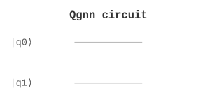

ML / 机器学习 | 难度：高级 | 预计时间：20 分钟
量子图神经网络是经典 GNN 的量子推广。
经典 GNN 训练慢
对于大规模图，经典方法效率低
量子 GNN 可以处理大规模图数据
训练速度更快
可以提取更复杂的特征
图分类
节点分类
链接预测
from quonic.ml import qgnn
result = qgnn(graph=[(0,1),(1,2)], features=[[1,0],[0,1]])
print(f'Embedding: {result.embedding}')预期输出：
Embedding: [0.5, 0.5]
量子图卷积： \[\begin{equation} H^{(l+1)} = \sigma(\tilde{D}^{-1/2} \tilde{A} \tilde{D}^{-1/2} H^{(l)} W^{(l)}) \end{equation}\]
量子图神经网络在图结构数据上学习。
from quonic.ml import qgnn
# qgnn(graph, features, n_layers)
# graph: list of edges
# features: node features
# n_layers: number of layers
result = qgnn(graph=[(0,1),(1,2)], features=[[1,0],[0,1]])
print(f'Embedding: {result.embedding}')from quonic.ml import qgnn
result = qgnn(graph=[(0,1),(1,2),(2,0)], features=[[1,0],[0,1],[1,1]])
print(f'Embedding: {result.embedding}')量子 GNN 可以用于图分类。
量子 GNN 可以用于节点分类。
可以处理大规模图数据。
取决于图的大小。
图神经网络
量子机器学习
量子态编码
社交网络分析
分子性质预测
量子机器学习
from quonic.ml import qgnn
result = qgnn(graph=[(0,1),(1,2)], features=[[1,0],[0,1]])
print(f'Embedding: {result.embedding}')(https://github.com/ChrisLee0721/QuoNic/blob/main/examples/qgnn/qgnn.py)